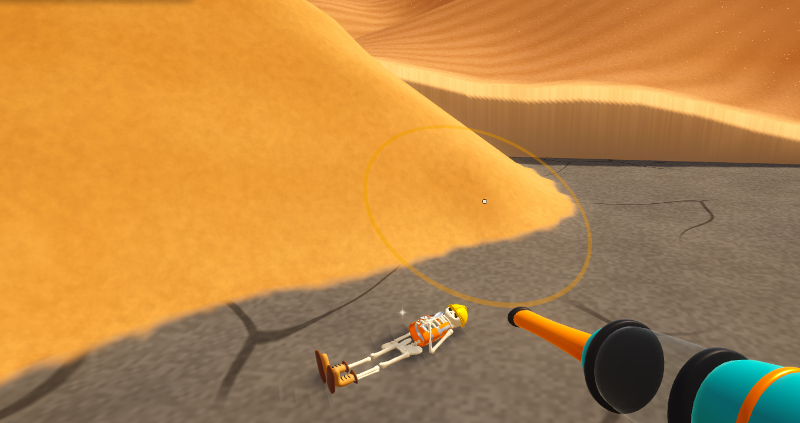
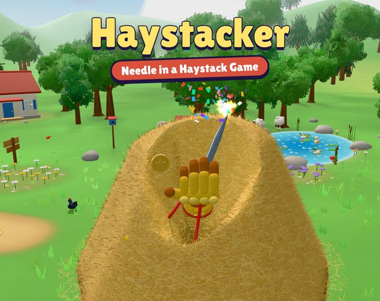
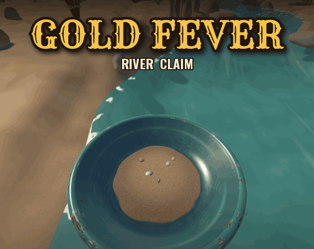
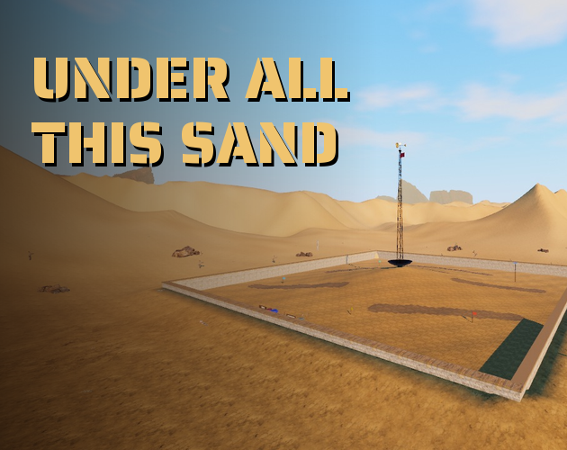
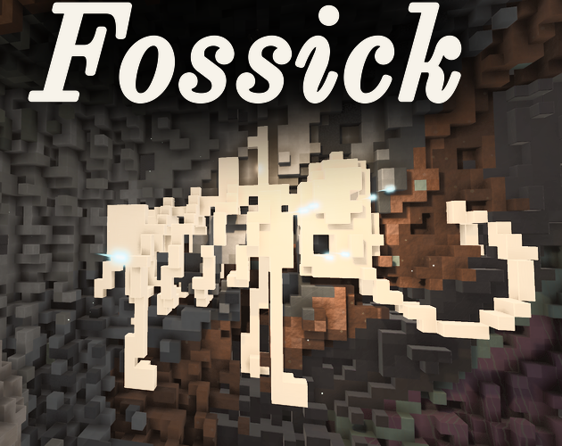
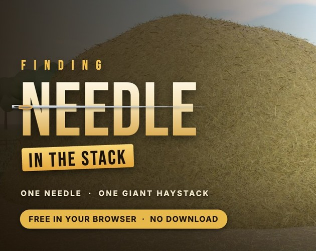
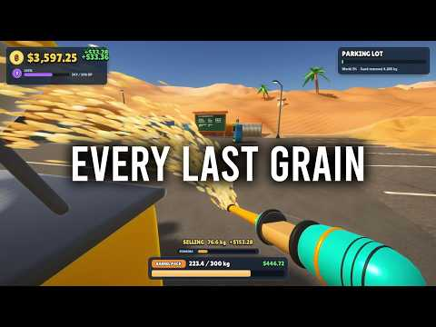
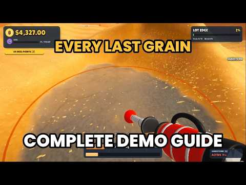

Fill your bag
Move with WASD, aim with the mouse, and hold the left mouse button or E to scoop sand.
One desert. One spoon. Sell sand by the kilo, upgrade your gear, and look beneath the dunes for 14 buried finds.

Verified browser games with digging, collecting, or upgrading. Each opens on its creator’s page.





Two gameplay videos on YouTube. Video loads only when you choose to play.

Watch a full play session and see how the dig develops.
Watch on YouTube ↗
A short walkthrough of controls, upgrades, and finds.
Watch on YouTube ↗Move with WASD, aim with the mouse, and hold the left mouse button or E to scoop sand.
Bring a full bag to the Sand Deposit and use E. Each trip turns sand into cash.
Spend at the Supply Terminal. Tools increase digging power; Bags & Tanks increase carrying capacity.
Fourteen finds hide in the Lot Edge. Mark your discoveries in the local tracker.
Yes. Start the game in the window above. For the best experience, play on a desktop with a mouse and keyboard.
The game uses keyboard and mouse controls, so a desktop browser is the best choice.
No. The finds tracker stores only the notes you enter in this browser. It does not change the game’s save.